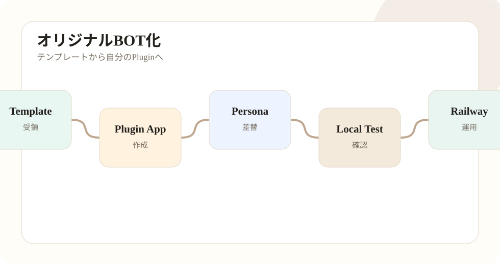

全体の流れ
公式配布や空のBaseテンプレートを受け取っただけでは、そのまま自分のBOTとして運用できません。自分のmixi2 Pluginアプリ、自分のOpenAI APIキー、自分のGitHub repo、自分のRailway環境、自分の人格と素材を用意します。

手順
- テンプレートをローカルへ置き、
go test ./...を通す。 - 自分のGitHub Private repoを作る。
- mixi2 Developer PlatformでPluginアプリを作る。
- Requirementを設定し、Application Versionを更新する。
- 対象コミュニティへPluginをインストールまたは再許可する。
- persona.jsonとassetsを自分のBOT用に差し替える。
- OpenAIとmixi2の確認コマンドを通す。
- Railwayへデプロイし、VariablesとVolumeを設定する。
- Deploy successfulとログを確認する。
オリジナル化で一番重要な考え方
テンプレートを使ってBOTを作る時、もっとも重要なのは「提供者の環境を流用しない」ことです。コードや構成を参考にしても、mixi2 Pluginアプリ、OpenAI APIキー、Railwayアカウント、GitHub repo、persona、画像素材は自分で用意します。
特にClient SecretやOpenAI APIキーは、見た目上ただの文字列ですが、外部サービスの認証情報そのものです。公開記事、スクリーンショット、チャット、GitHubに含めないようにします。
最小完成条件
| 項目 | 条件 |
|---|---|
| ローカル | go test ./... と go build ./cmd/plugin が通る。 |
| 人格 | persona.jsonが存在し、狙った口調で返す。 |
| mixi2 | mixi2check と timelinecheck が通る。 |
| OpenAI | gptcheck が通る。 |
| Railway | Deploy successful、Variables設定済み、/data Volumeあり。 |
| 運用 | 誤投稿、連投、返信誤爆を避ける設定になっている。 |
オリジナル化で起こりやすい失敗
よくある失敗は、テンプレートのPERSONA名だけ変えて、PERSONA_PATHやIMAGE_REF_DIRを変え忘れることです。これにより、テキストは新キャラのつもりでも、画像素材は旧キャラのまま、という状態になります。
次に多いのは、mixi2 Pluginアプリを作っただけで、Requirementや再許可を忘れることです。Client IDとSecretが正しくても、Requirementが足りなければtimeline取得や投稿は失敗します。
Railwayでは、Secretを空欄で上書きする事故があります。テンプレートの空文字を貼るのではなく、Railway画面で実値を設定します。公開記事には、値ではなく項目名と役割だけを書きます。